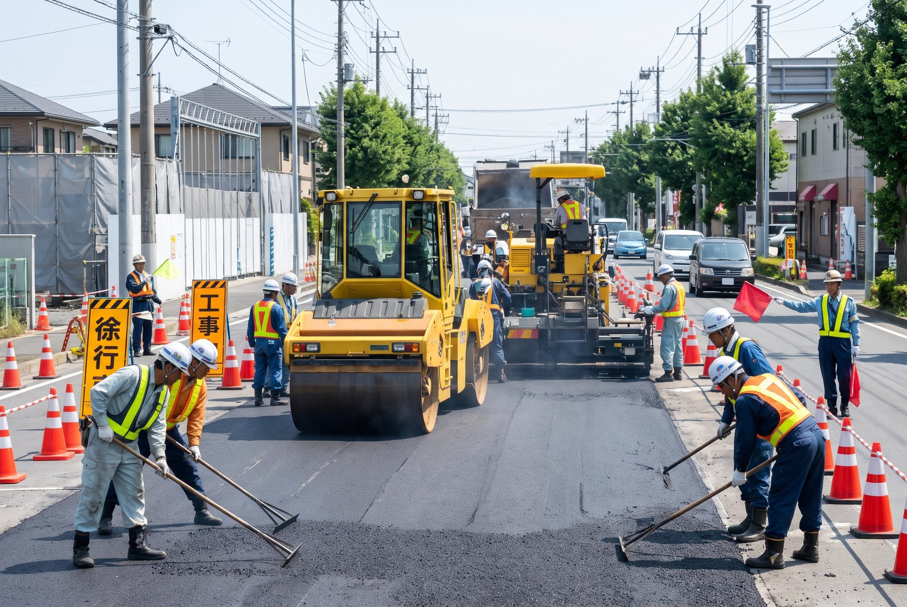

道路舗装から、住まいの外構まで。
千葉の街に「残る仕事」を、一緒にやりませんか。

月給（下限）
27.6万円〜
月給（上限）
42.6万円
雇用形態
正社員
現場エリア
千葉県内
WORK

現場は千葉県内です
※ここはサンプルです。実際には御社スタッフの1日の流れに差し替えます
7:30
8:00
10:00
12:00
13:00
15:00
17:00
「ちょっと気になる」だけでも大丈夫。
まずは話を聞きに来てください。
INTERVIEW
※ここはサンプルです。実際に働く社員へのインタビュー・写真に差し替えます

T.Sさん

Y.Hさん
VOICES
※ここはサンプルです。実際に働く先輩からのメッセージ・写真に差し替えます
K.Mさん
道具の使い方から一つずつ教えてもらえました。焦らなくて大丈夫です。
R.Oさん
自分が舗装した道を家族と通ったとき、ちょっと誇らしかったです。
A.Nさん
年齢に関係なく話しやすい現場。休憩中はいつも笑っています。
D.Iさん
やる気があれば、どんどん任せます。一緒にいい現場をつくりましょう。
ENVIRONMENT
※ここはサンプルです。実際には御社の制度・福利厚生の内容が入ります
🛡
加入保険の内容をここに記載します。
🚚
マイカー通勤・駐車場の有無などを記載します。
📜
資格取得に関する制度があれば記載します。
👕
貸与・支給の有無を記載します。
💴
手当・賞与・昇給の内容を記載します。
🗓
休日や長期休暇の内容を記載します。
Q&A
※ここはサンプルです。実際には御社の「よくある質問」が入ります
CONTACT PERSON
※ここはサンプルです。実際の採用担当者の写真・お名前・メッセージに差し替えます（任意パーツ）
REQUIREMENTS
| 職種 | 土木作業員 |
|---|---|
| 雇用形態 | 正社員 |
| 仕事内容 |
|
| 給与 | 月給 276,900円 〜 426,000円 |
| 勤務地 | 千葉県成田市加良部6-4-2-707（成田駅より車で約5分） ※現場は千葉県内となります |
| 勤務時間 | 【要確認】求人票の就業時間・休憩時間を記載 |
| 休日・休暇 | 【要確認】求人票の休日・年間休日数を記載 |
| 待遇・福利厚生 | 【要確認】加入保険・手当・賞与・昇給などを記載 |
| 応募資格 | 【要確認】必要な経験・免許・資格を記載 |
| 応募方法 | お電話にてご連絡ください。ハローワーク成田からもご応募いただけます（求人番号：12100-08605261）。 |
ご応募・ご質問、お待ちしています。
ハローワーク成田
求人番号 12100-08605261